技术002KNBasic
技术002KNBasic¶
Basics¶
Basics of Computer Networking¶
Protocol:
A protocol is the set of rules or algorithms which define the way how two entities can communicate across the network and there exists different protocol defined at each layer of the OSI model. Few of such protocols are TCP, IP, UDP, ARP, DHCP, FTP and so on.
MAC Address (Media Access Control address):
Also known as physical address, is the unique identifier of each host and is associated with the NIC (Network Interface Card).
MAC address is assigned to the NIC at the time of manufacturing. Length of the MAC address is : 12-nibble/ 6 bytes/ 48 bits
Type “ipconfig/all” in the command prompt and press ‘Enter’, this gives us the MAC address.
Port:
Port can be referred as a logical channel through which data can be sent/received to an application. Any host may have multiple applications running, and each of this application is identified using the port number on which they are running.
Port number is a 16-bit integer, hence we have 216 ports available which are categorized as shown below:
PORT TYPES RANGE Well known Ports 0 – 1023 Registered Ports 1024 – 49151 Ephemeral Ports 49152 – 65535 Number of ports: 65,536 Range: 0 – 65535
ARP:
ARP stands for Address Resolution Protocol.
It is used to convert the IP address to its corresponding Physical Address(i.e.MAC Address).
ARP is used by the Data Link Layer to identify the MAC address of the Receiver’s machine.
The Internet and the Web¶
The Internet:
This model divides methods into a layered system of protocols. These layers are as follows:
Application layer (highest) – concerned with the data(URL, type, etc), where HTTP, HTTPS, etc comes in.
Transport layer – responsible for end-to-end communication over a network. Network layer – provides data route. Client和server之间的交互图 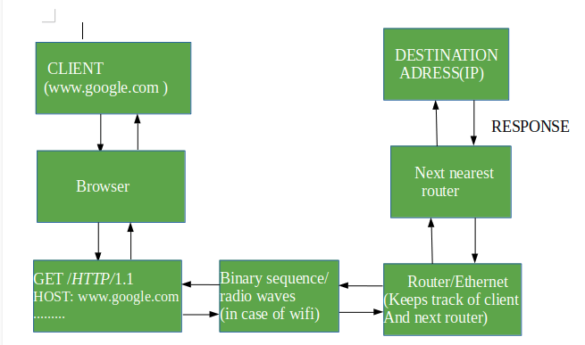
Transmission Modes in Computer Networks (Simplex, Half-Duplex and Full-Duplex)¶
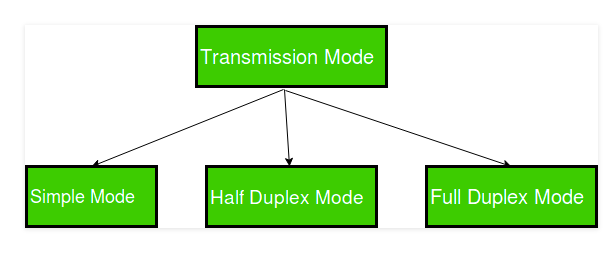
Simplex Mode
In Simplex mode, the communication is unidirectional, as on a one-way street. Only one of the two devices on a link can transmit, the other can only receive. The simplex mode can use the entire capacity of the channel to send data in one direction.
Example: Keyboard and traditional monitors. The keyboard can only introduce input, the monitor can only give the output.
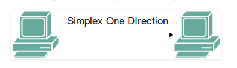
Half-Duplex Mode
In half-duplex mode, each station can both transmit and receive, but not at the same time. When one device is sending, the other can only receive, and vice versa. The half-duplex mode is used in cases where there is no need for communication in both direction at the same time. The entire capacity of the channel can be utilized for each direction.
Example: Walkie- talkie in which message is sent one at a time and messages are sent in both the directions.
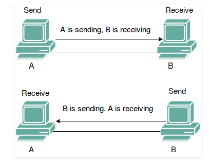
Full-Duplex Mode
In full-duplex mode, both stations can transmit and receive simultaneously. In full_duplex mode, signals going in one direction share the capacity of the link with signals going in other direction, this sharing can occur in two ways:
Either the link must contain two physically separate transmission paths, one for sending and other for receiving.
Or the capacity is divided between signals travelling in both directions.
Full-duplex mode is used when communication in both direction is required all the time. The capacity of the channel, however must be divided between the two directions.
Example: Telephone Network in which there is communication between two persons by a telephone line, through which both can talk and listen at the same time.
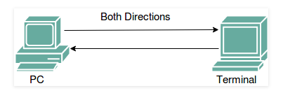
Types of Network Topology¶
Mesh Topology
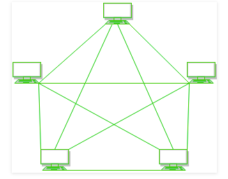
Figure 1 : Every device is connected with another via dedicated channels. These channels are known as links.
If suppose, N number of devices are connected with each other in mesh topology, then total number of ports that is required by each device is N-1. In the Figure 1, there are 5 devices connected to each other, hence total number of ports required is 4.
If suppose, N number of devices are connected with each other in mesh topology, then total number of dedicated links required to connect them is NC2 i.e. N(N-1)/2. In the Figure 1, there are 5 devices connected to each other, hence total number of links required is 5*4/2 = 10.
Advantages of this topology : It is robust.
Fault is diagnosed easily. Data is reliable because data is transferred among the devices through dedicated channels or links.
Provides security and privacy. Problems with this topology : Installation and configuration is difficult.
Cost of cables are high as bulk wiring is required, hence suitable for less number of devices.
Cost of maintenance is high.
Star Topology
Figure 2 : A star topology having four systems connected to single point of connection i.e. hub.
Advantages of this topology :
If N devices are connected to each other in star topology, then the number of cables required to connect them is N. So, it is easy to set up.
Each device require only 1 port i.e. to connect to the hub. Problems with this topology :
If the concentrator (hub) on which the whole topology relies fails, the whole system will crash down.
Cost of installation is high. Performance is based on the single concentrator i.e. hub.
Bus Topology
Bus topology is a network type in which every computer and network device is connected to single cable. It transmits the data from one end to another in single direction. No bi-directional feature is in bus topology.
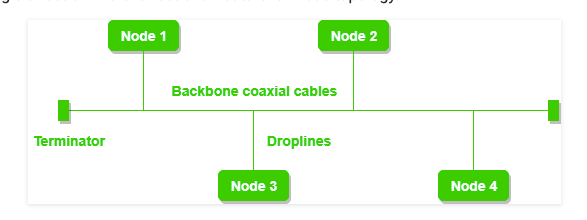
Figure 3 : A bus topology with shared backbone cable. The nodes are connected to the channel via drop lines.
Advantages of this topology :
If N devices are connected to each other in bus topology, then the number of cables required to connect them is 1 which is known as backbone cable and N drop lines are required.
Cost of the cable is less as compared to other topology, but it is used to built small networks.
Problems with this topology : If the common cable fails, then the whole system will crash down.
If the network traffic is heavy, it increases collisions in the network. To avoid this, various protocols are used in MAC layer known as Pure Aloha, Slotted Aloha, CSMA/CD etc.
Ring Topology
In this topology, it forms a ring connecting a devices with its exactly two neighbouring devices
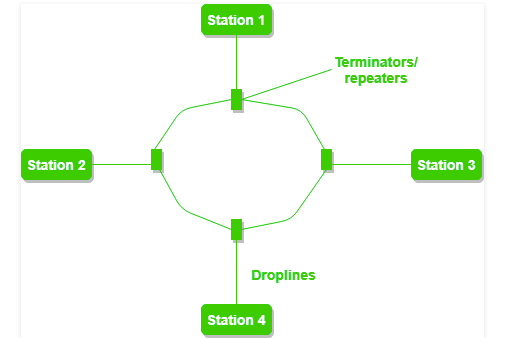
Figure 4 : A ring topology comprises of 4 stations connected with each forming a ring..
The following operations takes place in ring topology are :
One station is known as monitor station which takes all the responsibility to perform the operations.
To transmit the data, station has to hold the token. After the transmission is done, the token is to be released for other stations to use.
When no station is transmitting the data, then the token will circulate in the ring.
There are two types of token release techniques : Early token release releases the token just after the transmitting the data and Delay token release releases the token after the acknowledgement is received from the receiver.
Advantages of this topology : The possibility of collision is minimum in this type of topology. Cheap to install and expand. Problems with this topology : Troubleshooting is difficult in this topology.
Addition of stations in between or removal of stations can disturb the whole topology.
Hybrid Topology
This topology is a collection of two or more topologies which are described above. This is a scalable topology which can be expanded easily. It is reliable one but at the same it is a costly topology.
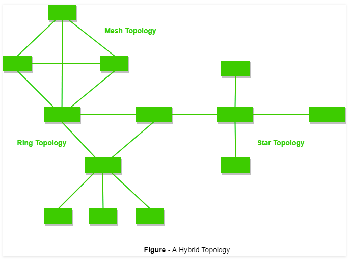
TCP/IP Model¶
Layers of OSI Model 1. Physical Layer (Layer 1) bits
Hub, Repeater, Modem, Cables are Physical Layer devices.
** Network Layer, Data Link Layer and Physical Layer are also known as Lower Layers or Hardware Layers.
Data Link Layer (DLL) (Layer 2)
When a packet arrives in a network, it is the responsibility of DLL to transmit it to the Host using its MAC address.
Data Link Layer is divided into two sub layers : 1.Logical Link Control (LLC)2.Media Access Control (MAC) The functions of the data Link layer are :
Framing: Framing is a function of the data link layer. It provides a way for a sender to transmit a set of bits that are meaningful to the receiver. This can be accomplished by attaching special bit patterns to the beginning and end of the frame.
Physical addressing: After creating frames, Data link layer adds physical addresses (MAC address) of sender and/or receiver in the header of each frame.
Error control: Data link layer provides the mechanism of error control in which it detects and retransmits damaged or lost frames.
Flow Control: The data rate must be constant on both sides else the data may get corrupted thus , flow control coordinates that amount of data that can be sent before receiving acknowledgement.
Access control: When a single communication channel is shared by multiple devices, MAC sub-layer of data link layer helps to determine which device has control over the channel at a given time.
Packet in Data Link layer is referred as Frame.
** Data Link layer is handled by the NIC (Network Interface Card) and device drivers of host machines.
*** Switch & Bridge are Data Link Layer devices. 交换机和网桥属于2层，数据对象是Frame 1. Network Layer (Layer 3)
Network layer works for the transmission of data from one host to the other located in different networks. It also takes care of packet routing i.e. selection of the shortest path to transmit the packet, from the number of routes available. The sender & receiver’s IP address are placed in the header by network layer.The functions of the Network layer are :
Routing: The network layer protocols determine which route is suitable from source to destination. This function of network layer is known as routing.Logical Addressing: In order to identify each device on internetwork uniquely, network layer defines an addressing scheme. The sender & receiver’s IP address are placed in the header by network layer. Such an address distinguishes each device uniquely and universally.* Segment in Network layer is referred as Packet.
** Network layer is implemented by networking devices such as routers. 路由属于第3层，数据对象是数据包 2. Transport Layer (Layer 4)
Transport layer provides services to application layer and takes services from network layer. The data in the transport layer is referred to as Segments. It is responsible for the End to End delivery of the complete message. Transport layer also provides the acknowledgment of the successful data transmission and re-transmits the data if an error is found.
Data in the Transport Layer is called as Segments.
** Transport layer is operated by the Operating System. It is a part of the OS and communicates with the Application Layer by making system calls.
Transport Layer is called as Heart of OSI model. 1. Session Layer (Layer 5) 2. Presentation Layer (Layer 6) 3. Application Layer (Layer 7) **Application Layer is also called as Desktop Layer. The functions of the Application layer are : Network Virtual Terminal FTAM-File transfer access and management Mail Services Directory Services 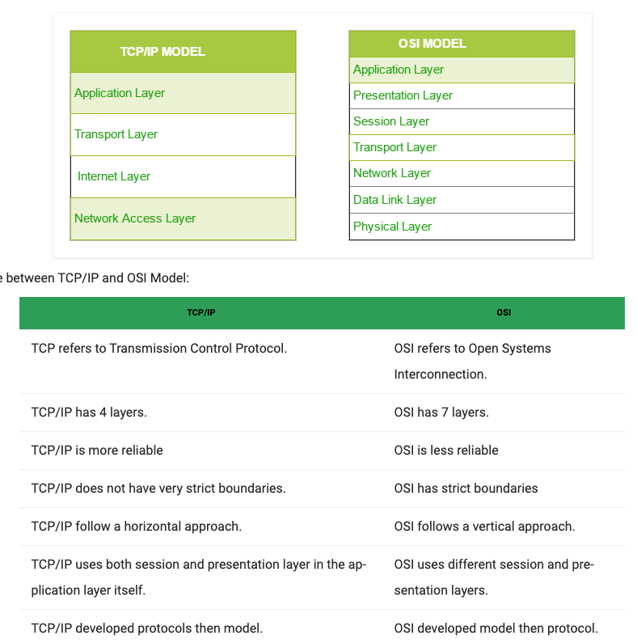
Data Link Layer¶
Local Area Network (LAN) Technologies.¶
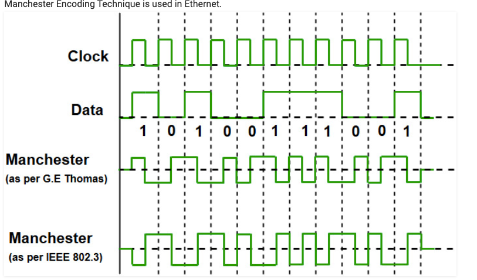
Since we are talking about IEEE 802.3 standard Ethernet therefore, 0 is expressed by a high-to-low transition, a 1 by the low-to-high transition. In both Manchester Encoding and Differential Manchester, Encoding Baud rate is double of bit rate.
Baud rate = 2* Bit rate
Data Terminal Equipment (DTE)：Generally, DTEs are the end devices that convert the user information into signals or reconvert the received signals. DTEs devices are: personal computers, workstations, file servers or print servers also referred to as end stations. These devices are either the source or the destination of data frames.
Data Communication Equipment (DCE)：DCEs are the intermediate network devices that receive and forward frames across the network. They may be either standalone devices such as repeaters, network switches, routers or maybe communications interface units such as interface cards and modems.
网络设备：集线器/中继器/桥接器/交换机/路由器/网关/桥路由
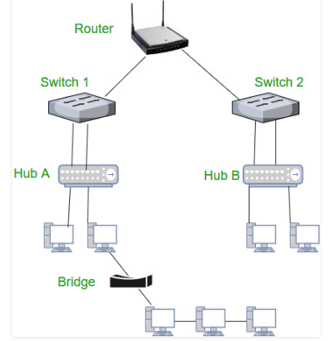 交换的网络包流动示意图
Framing in Data Link Layer¶
Frames are the units of digital transmission particularly in computer networks and telecommunications. Frames are comparable to the packets of energy called photons in case of light energy. Frame is continuously used in Time Division Multiplexing process.
Framing is a point-to-point connection between two computers or devices consists of a wire in which data is transmitted as a stream of bits. However, these bits must be framed into discernible blocks of information. Framing is a function of the data link layer. It provides a way for a sender to transmit a set of bits that are meaningful to the receiver. Ethernet, token ring, frame relay, and other data link layer technologies have their own frame structures. Frames have headers that contain information such as error-checking codes.
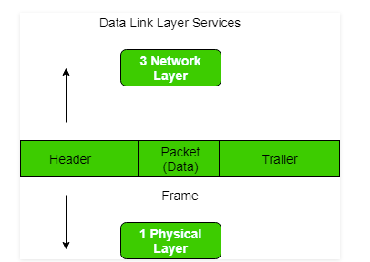
Introduction of MAC Address in Computer Network¶
Media Access Control (MAC) Address
MAC Addresses are unique 48-bits hardware number of a computer, which is embedded into network card (known as Network Interface Card) during the time of manufacturing. MAC Address is also known as Physical Address of a network device. In IEEE 802 standard, Data Link Layer is divided into two sublayers –
Logical Link Control(LLC) Sublayer Media Access Control(MAC) Sublayer 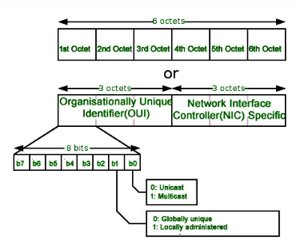 Types of MAC Address
Unicast单播
Multicast组播
Broadcast广播
DHCP server records the MAC address and then assign IP address.
MAC Filtering in Computer Network¶
DHCP可以过滤MAC地址
Difference between Byte stuffing and Bit stuffing¶
Each frame consists of the sender’s address and a destination address. The destination address defines where the packet is to go and the sender’s address helps the recipient acknowledge the receipt.
Frames could be of fixed size or variable size. In fixed-size framing, there is no need for defining the boundaries of the frames as the size itself can be used to define the end of the frame and the beginning of the next frame. But, in variable-size framing, we need a way to define the end of the frame and the beginning of the next frame.
区分Frame的两种媒介 1. Using Byte stuffing (or character stuffing) 字符
A byte (usually escape character(ESC)), which has a predefined bit pattern is added to the data section of the frame when there is a character with the same pattern as the flag
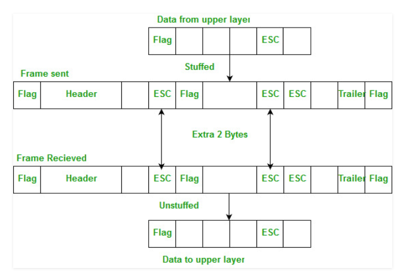 2. Using Bit stuffing 比特
Mostly flag is a special 8-bit pattern “01111110” used to define the beginning and the end of the frame.
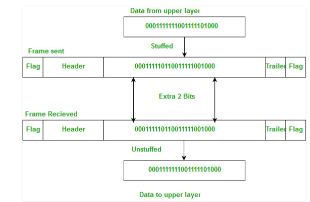
Packet Switching and Delays in Computer Network¶
Packet switching is a method of transferring the data to a network in form of packets. In order to transfer the file fast and efficient manner over the network and minimize the transmission latency, the data is broken into small pieces of variable length, called Packet.
Packet Switching uses Store and Forward technique while switching the packets
Connection-oriented Packet Switching (Virtual Circuit)
Connectionless Packet Switching (Datagram)
In Connectionless Packet Switching each packet contains all necessary addressing information such as source address, destination address and port numbers etc
Virtual LAN (VLAN)¶
Inter VLAN Routing by Layer 3 Switch¶
Normally, Routers are used to divide broadcast domain and switches (at layer 2) Operates in a single broadcast domain but Switches can also divide broadcast domain by using the concept of VLAN (Virtual LAN).
Private VLAN¶
Difference between Stop and Wait, GoBackN and Selective Repeat¶
Network Layer¶
Introduction and IPv4 Datagram Header¶
网络层位于OSI第三层，用于跨网络之间传输数据包，被认为是OSI Model的基石。This layer contains hardware devices such as routers, bridges, firewalls, and switches, but it actually creates a logical image of the most efficient communication route and implements it with a physical medium. Network layer protocols exist in every host or router. The router examines the header fields of all the IP packets that pass through it. Internet Protocol and Netware IPX/SPX are the most common protocols associated with the network layer.
In the OSI model, the network layer responds to requests from the layer above it (transport layer) and issues requests to the layer below it (data link layer).
Responsibilities of Network Layer:
Packet forwarding/Routing of packets: Relaying of data packets from one network segment to another by nodes in a computer network
Connectionless communication(IP): A data transmission method used in packet-switched networks in which each data unit is separately addressed and routed based on information carried by it
Fragmentation of data packets: Splitting of data packets that are too large to be transmitted on the network
IPv4:
IPv4 isIPv4: a connectionless protocol used for packet switched networks. It operates on a best effort delivery model, in which neither delivery is guaranteed, nor proper sequencing or avoidance of duplicate delivery is assured. Internet Protocol Version 4 (IPv4) is the fourth revision of the Internet Protocol and a widely used protocol in data communication over different kinds of networks. IPv4 is a connectionless protocol used in packet-switched layer networks, such as Ethernet. It provides a logical connection between network devices by providing identification for each device. There are many ways to configure IPv4 with all kinds of devices – including manual and automatic configurations – depending on the network type.
IPv4 is defined and specified in IETF publication RFC 791.
IPv4 uses 32-bit addresses for Ethernet communication in five classes: A, B, C, D and E. Classes A, B and C have a different bit length for addressing the network host. Class D addresses are reserved for military purposes, while class E addresses are reserved for future use.
IPv4 uses 32-bit (4 byte) addressing, which gives 232 addresses. IPv4 addresses are written in the dot-decimal notation, which comprises of four octets of the address expressed individually in decimal and separated by periods, for instance, 192.168.1.5.
IPv4 Datagram Header Size of the header is 20 to 60 bytes. 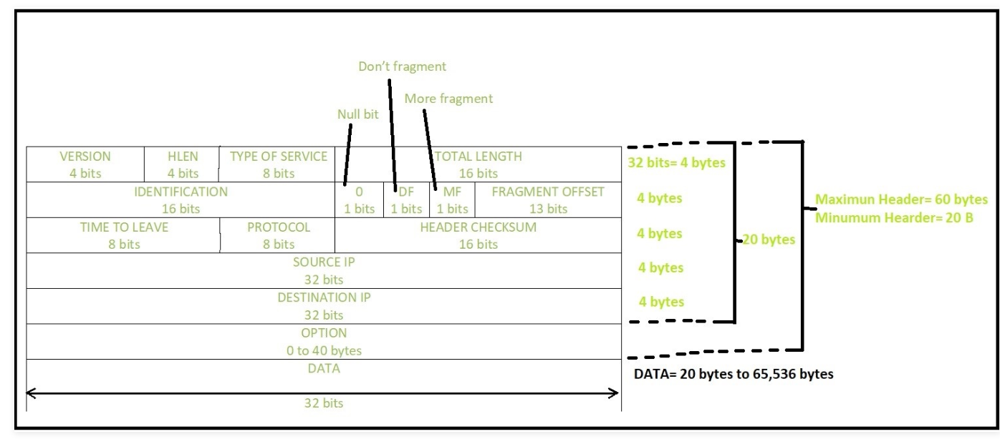
VERSION: Version of the IP protocol (4 bits), which is 4 for IPv4
HLEN: IP header length (4 bits), which is the number of 32 bit
words in the header. The minimum value for this field is 5
and the maximum is 15
Type of service: Low Delay, High Throughput, Reliability (8 bits)
Total Length: Length of header + Data (16 bits), which has a
minimum value 20 bytes and the maximum is 65,535 bytes
Identification: Unique Packet Id for identifying the group of
fragments of a single IP datagram (16 bits)
Flags: 3 flags of 1 bit each : reserved bit (must be zero),
do not fragment flag, more fragments flag (same order)
Fragment Offset: Represents the number of Data Bytes ahead of the particular fragment in the particular Datagram. Specified in terms of number of 8 bytes, which has the maximum value of 65,528 bytes
Time to live: Datagram’s lifetime (8 bits), It prevents the datagram to loop through the network by restricting the number of Hops taken by a Packet before delivering to the Destination.
Protocol: Name of the protocol to which the data is to be passed
(8 bits)
Header Checksum: 16 bits header checksum for checking errors in the
datagram header
Source IP address: 32 bits IP address of the sender
Destination IP address: 32 bits IP address of the receiver
Option: Optional information such as source route, record route. Used by the Network administrator to check whether a path is working or not.
Introduction of Classful IP Addressing¶
Classful Addressing The 32 bit IP address is divided into five sub-classes. These are:
Class A
Class B
Class C
Class D
Class E
Each of these classes has a valid range of IP addresses. Classes D and E are reserved for multicast and experimental purposes respectively. The order of bits in the first octet determine the classes of IP address.
IPv4 address is divided into two parts:
Network ID
Host ID
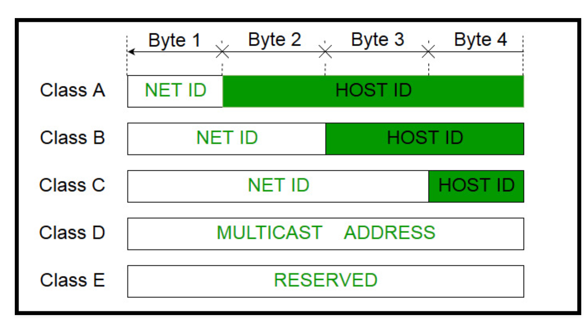
Class A:
IP address belonging to class A are assigned to the networks that contain a large number of hosts.
The network ID is 8 bits long.
The host ID is 24 bits long.
The higher order bit of the first octet in class A is always set to 0. The remaining 7 bits in first octet are used to determine network ID. The 24 bits of host ID are used to determine the host in any network. The default subnet mask for class A is 255.x.x.x. Therefore, class A has a total of:
2^7-2= 126 network ID(Here 2 address is subracted because 0.0.0.0 and 127.x.y.z are special address. )
2^24 – 2 = 16,777,214 host ID
IP addresses belonging to class A ranges from 1.x.x.x – 126.x.x.x 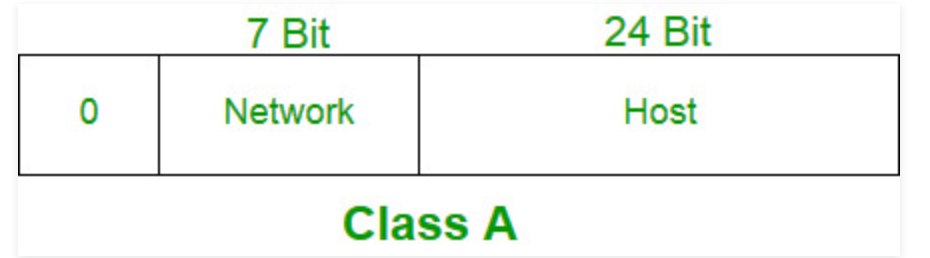
Class B:
IP address belonging to class B are assigned to the networks that ranges from medium-sized to large-sized networks.
The network ID is 16 bits long.
The host ID is 16 bits long.
The higher order bits of the first octet of IP addresses of class B are always set to 10. The remaining 14 bits are used to determine network ID. The 16 bits of host ID is used to determine the host in any network. The default sub-net mask for class B is 255.255.x.x. Class B has a total of:
2^14 = 16384 network address
2^16 – 2 = 65534 host address
IP addresses belonging to class B ranges from 128.0.x.x – 191.255.x.x. 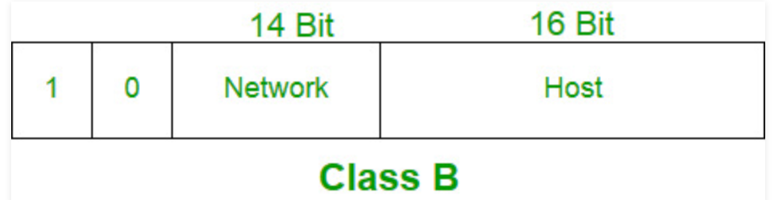
Class C:
IP address belonging to class C are assigned to small-sized networks.
The network ID is 24 bits long.
The host ID is 8 bits long.
The higher order bits of the first octet of IP addresses of class C are always set to 110. The remaining 21 bits are used to determine network ID. The 8 bits of host ID is used to determine the host in any network. The default sub-net mask for class C is 255.255.255.x. Class C has a total of:
2^21 = 2097152 network address
2^8 – 2 = 254 host address
IP addresses belonging to class C ranges from 192.0.0.x – 223.255.255.x. 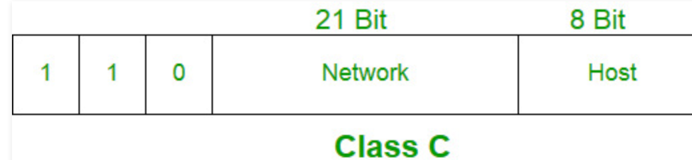
Class D:
IP address belonging to class D are reserved for multi-casting. The higher order bits of the first octet of IP addresses belonging to class D are always set to 1110. The remaining bits are for the address that interested hosts recognize.
Class D does not posses any sub-net mask. IP addresses belonging to class D ranges from 224.0.0.0 – 239.255.255.255.
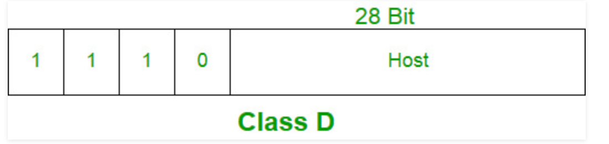
Class E:
IP addresses belonging to class E are reserved for experimental and research purposes. IP addresses of class E ranges from 240.0.0.0 – 255.255.255.254. This class doesn’t have any sub-net mask. The higher order bits of first octet of class E are always set to 1111.
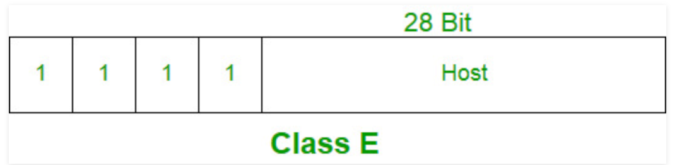
Range of special IP addresses:
169.254.0.0 – 169.254.0.16 : Link local addresses 127.0.0.0 – 127.0.0.8 : Loop-back addresses 0.0.0.0 – 0.0.0.8 : used to communicate within the current network.
Rules for assigning Host ID:
Host ID’s are used to identify a host within a network. The host ID are assigned based on the following rules:
Within any network, the host ID must be unique to that network.
Host ID in which all bits are set to 0 cannot be assigned because this host ID is used to represent the network ID of the IP address.
Host ID in which all bits are set to 1 cannot be assigned because this host ID is reserved as a broadcast address to send packets to all the hosts present on that particular network.
Rules for assigning Network ID:
Hosts that are located on the same physical network are identified by the network ID, as all host on the same physical network is assigned the same network ID. The network ID is assigned based on the following rules:
The network ID cannot start with 127 because 127 belongs to class A address and is reserved for internal loop-back functions.
All bits of network ID set to 1 are reserved for use as an IP broadcast address and therefore, cannot be used.
All bits of network ID set to 0 are used to denote a specific host on the local network and are not routed and therefore, aren’t used.
Summary of Classful addressing ：
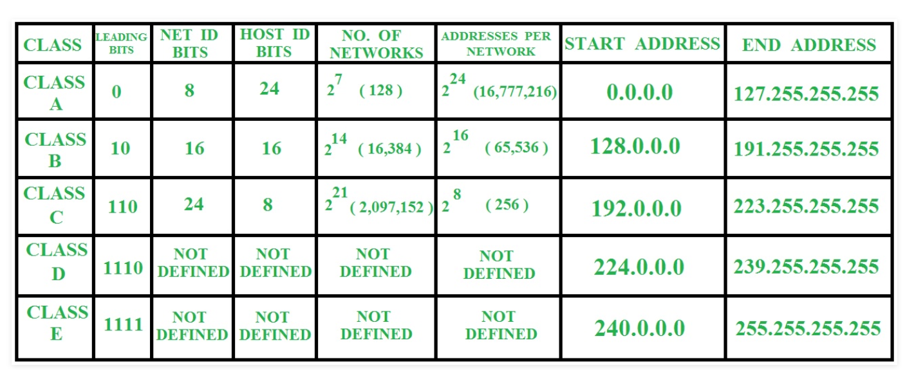 2 27=128128*B* 26=6427+26=128+64=192*C*
25=3227+26+25=128+64+32=224*D* 24=1627+26+25=128+64+32=240*E*
Problems with Classful Addressing:
The problem with this classful addressing method is that millions of class A address are wasted, many of the class B address are wasted, whereas, number of addresses available in class C is so small that it cannot cater the needs of organizations. Class D addresses are used for multicast routing and are therefore available as a single block only. Class E addresses are reserved.
Since there are these problems, Classful networking was replaced by Classless Inter-Domain Routing (CIDR) in 1993. We will be discussing Classless addressing in next post.
Classless Addressing
To reduce the wastage of IP addresses in a block, we use sub-netting. What we do is that we use host id bits as net id bits of a classful IP address. We give the IP address and define the number of bits for mask along with it (usually followed by a ‘/’ symbol), like, 192.168.1.1/28. Here, subnet mask is found by putting the given number of bits out of 32 as 1, like, in the given address, we need to put 28 out of 32 bits as 1 and the rest as 0, and so, the subnet mask would be 255.255.255.240.
Some values calculated in subnetting :
Number of subnets : Given bits for mask – No. of bits in default mask
Subnet address : AND result of subnet mask and the given IP address
Broadcast address : By putting the host bits as 1 and retaining the network bits as in the IP address
Number of hosts per subnet : 2(32 – Given bits for mask) – 2
First Host ID : Subnet address + 1 (adding one to the binary representation of the subnet address)
Last Host ID : Subnet address + Number of Hosts
IPv4 Classless Subnet equation¶
First Of All, Keep this Subnet Hosts Map in mind (Number of Hosts per Prefix): Network Prefix: Number of IPs 24 : 256 IPs 25 : 128 IPs 26 : 64 IPs 27 : 32 IPs 28 : 16 IPs 29 : 8 IPs 30 : 4 IPs
Using Equation:
Network ID: floor(Host Address/Subnet Number of Hosts) * Subnet Number of Hosts Broadcast ID: (Host ID + (Subnet Number of Hosts-1)) First Host: Network ID + 1 Last Host: Broadcast ID - 1
Ex1: 192.168.1.65/28:
65/16 = 4.0625 Network ID: 4*16 = 64 (192.168.1.64) Broadcast ID: 64+(16-1) = 79 (192.168.1.79) First Host ID: 64 + 1 = 65 (192.168.1.65) Last Host ID: 79 - 1 = 78 (192.168.1.78)
Ex2: 192.168.20.166/25:
166/128 = 1.296875 Network ID: 1*128 = 128 (192.168.20.128) Broadcast ID: 128+(128-1) = 255 (192.168.20.255) First Host ID: 128 + 1 = 129 (192.168.20.129) Last Host ID: 255 - 1 = 254 (192.168.20.254)
IPv4 Datagram Fragmentation and Delays¶
Example: For a data packet of 4000 bytes and MTU of 1500 bytes, we have actual data of 3980 bytes that is to be transmitted and 1480 bytes is the maximum data size that is permissible to be sent. So, there would be 3 fragments:
For the first fragment, data size = 1480 bytes, offset = 0 and MF flag = 1 For the second fragment, data size = 1480 bytes, offset = 1480 and MF flag = 1 For the third fragment, data size = 1020 bytes, offset = 2960 and MF flag = 0
An important point to be noted here is that all fragments would be having same identification number, thus indicating that all the fragments belong to the same parent data packet.
Delays –
Processing delay: Time taken by the routers to process the data packet header. Queuing delay: Time taken by the data packet in routing queues.
Transmission delay: Time taken to load a data packet onto the transmission channel
Dt = N/R, N: Number of bits to be transmitted R: Rate or transmission speed of the channel
Propagation delay – Time taken by the data packet to reach from source to destination
Dp = D/S, D: Distance between the source and the destination S: is the speed of propagation
Fragmentation at Network Layer¶
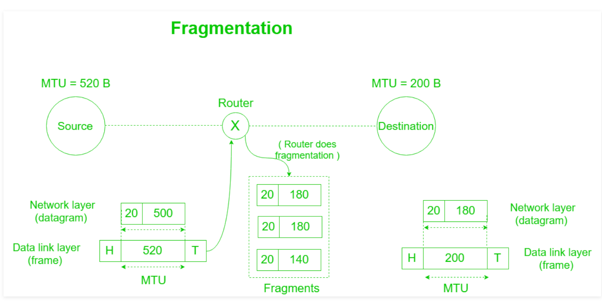
%23%20%E6%8A%80%E6%9C%AF002KNBasic%0A%5BTOC%5D%0A%23%23%20Basics%0A%23%23%23%20Basics%20of%20Computer%20Networking%0A%0A-%20Protocol%3A%0AA%20protocol%20is%20the%20set%20of%20rules%20or%20algorithms%20which%20define%20the%20way%20how%20two%20entities%20can%20communicate%20across%20the%20network%20and%20there%20exists%20different%20protocol%20defined%20at%20each%20layer%20of%20the%20OSI%20model.%20Few%20of%20such%20protocols%20are%20TCP%2C%20IP%2C%20UDP%2C%20ARP%2C%20DHCP%2C%20FTP%20and%20so%20on.%0A%0A-%20MAC%20Address%20(Media%20Access%20Control%20address)%3A%0AAlso%20known%20as%20physical%20address%2C%20is%20the%20unique%20identifier%20of%20each%20host%20and%20is%20associated%20with%20the%20NIC%20(Network%20Interface%20Card).%0AMAC%20address%20is%20assigned%20to%20the%20NIC%20at%20the%20time%20of%20manufacturing.%0ALength%20of%20the%20MAC%20address%20is%20%3A%2012-nibble%2F%206%20bytes%2F%2048%20bits%0AType%20%E2%80%9Cipconfig%2Fall%E2%80%9D%20in%20the%20command%20prompt%20and%20press%20%E2%80%98Enter%E2%80%99%2C%20this%20gives%20us%20the%20MAC%20address.%0A%0A-%20Port%3A%0APort%20can%20be%20referred%20as%20a%20logical%20channel%20through%20which%20data%20can%20be%20sent%2Freceived%20to%20an%20application.%20Any%20host%20may%20have%20multiple%20applications%20running%2C%20and%20each%20of%20this%20application%20is%20identified%20using%20the%20port%20number%20on%20which%20they%20are%20running.%0APort%20number%20is%20a%2016-bit%20integer%2C%20hence%20we%20have%20216%20ports%20available%20which%20are%20categorized%20as%20shown%20below%3A%0A%0APORT%20TYPES%09RANGE%0AWell%20known%20Ports%090%20%E2%80%93%201023%0ARegistered%20Ports%091024%20%E2%80%93%2049151%0AEphemeral%20Ports%0949152%20%E2%80%93%2065535%0ANumber%20of%20ports%3A%2065%2C536%0ARange%3A%200%20%E2%80%93%2065535%0A%0A-%20ARP%3A%0AARP%20stands%20for%20Address%20Resolution%20Protocol.%0AIt%20is%20used%20to%20convert%20the%20IP%20address%20to%20its%20corresponding%20Physical%20Address(i.e.MAC%20Address).%0AARP%20is%20used%20by%20the%20Data%20Link%20Layer%20to%20identify%20the%20MAC%20address%20of%20the%20Receiver%E2%80%99s%20machine.%0A%0A%23%23%23%20The%20Internet%20and%20the%20Web%0A%0A-%20The%20Internet%3A%0AThis%20model%20divides%20methods%20into%20a%20layered%20system%20of%20protocols.%0A%0AThese%20layers%20are%20as%20follows%3A%0A%0AApplication%20layer%20(highest)%20%E2%80%93%20concerned%20with%20the%20data(URL%2C%20type%2C%20etc)%2C%20where%20HTTP%2C%20HTTPS%2C%20etc%20comes%20in.%0ATransport%20layer%20%E2%80%93%20responsible%20for%20end-to-end%20communication%20over%20a%20network.%0ANetwork%20layer%20%E2%80%93%20provides%20data%20route.%0A%0AClient%E5%92%8Cserver%E4%B9%8B%E9%97%B4%E7%9A%84%E4%BA%A4%E4%BA%92%E5%9B%BE%0A!%5B9122a901023cf0c583918ead2c496062.png%5D(evernotecid%3A%2F%2F48E6E93E-A436-4E8F-9B4B-205CB9D86842%2Fappyinxiangcom%2F23555478%2FENResource%2Fp519)%0A%0A%0A%23%23%23%20Transmission%20Modes%20in%20Computer%20Networks%20(Simplex%2C%20Half-Duplex%20and%20Full-Duplex)%0A%0A!%5Be462d5e369154ac0762780a975eb64b9.png%5D(evernotecid%3A%2F%2F48E6E93E-A436-4E8F-9B4B-205CB9D86842%2Fappyinxiangcom%2F23555478%2FENResource%2Fp520)%0A%0A-%20Simplex%20Mode%0AIn%20Simplex%20mode%2C%20the%20communication%20is%20unidirectional%2C%20as%20on%20a%20one-way%20street.%20Only%20one%20of%20the%20two%20devices%20on%20a%20link%20can%20transmit%2C%20the%20other%20can%20only%20receive.%20The%20simplex%20mode%20can%20use%20the%20entire%20capacity%20of%20the%20channel%20to%20send%20data%20in%20one%20direction.%0AExample%3A%20Keyboard%20and%20traditional%20monitors.%20The%20keyboard%20can%20only%20introduce%20input%2C%20the%20monitor%20can%20only%20give%20the%20output.%0A!%5B03f5f1ec47b0f60732221e561d4235f6.png%5D(evernotecid%3A%2F%2F48E6E93E-A436-4E8F-9B4B-205CB9D86842%2Fappyinxiangcom%2F23555478%2FENResource%2Fp521)%0A%0A-%20Half-Duplex%20Mode%0AIn%20half-duplex%20mode%2C%20each%20station%20can%20both%20transmit%20and%20receive%2C%20but%20not%20at%20the%20same%20time.%20When%20one%20device%20is%20sending%2C%20the%20other%20can%20only%20receive%2C%20and%20vice%20versa.%20The%20half-duplex%20mode%20is%20used%20in%20cases%20where%20there%20is%20no%20need%20for%20communication%20in%20both%20direction%20at%20the%20same%20time.%20The%20entire%20capacity%20of%20the%20channel%20can%20be%20utilized%20for%20each%20direction.%0AExample%3A%20Walkie-%20talkie%20in%20which%20message%20is%20sent%20one%20at%20a%20time%20and%20messages%20are%20sent%20in%20both%20the%20directions.%0A%0A!%5Bbb6d23c0bba8932c5c59798d4d40d9d9.png%5D(evernotecid%3A%2F%2F48E6E93E-A436-4E8F-9B4B-205CB9D86842%2Fappyinxiangcom%2F23555478%2FENResource%2Fp522)%0A%0A-%20Full-Duplex%20Mode%0AIn%20full-duplex%20mode%2C%20both%20stations%20can%20transmit%20and%20receive%20simultaneously.%20In%20full_duplex%20mode%2C%20signals%20going%20in%20one%20direction%20share%20the%20capacity%20of%20the%20link%20with%20signals%20going%20in%20other%20direction%2C%20this%20sharing%20can%20occur%20in%20two%20ways%3A%0A%0AEither%20the%20link%20must%20contain%20two%20physically%20separate%20transmission%20paths%2C%20one%20for%20sending%20and%20other%20for%20receiving.%0AOr%20the%20capacity%20is%20divided%20between%20signals%20travelling%20in%20both%20directions.%0AFull-duplex%20mode%20is%20used%20when%20communication%20in%20both%20direction%20is%20required%20all%20the%20time.%20The%20capacity%20of%20the%20channel%2C%20however%20must%20be%20divided%20between%20the%20two%20directions.%0AExample%3A%20Telephone%20Network%20in%20which%20there%20is%20communication%20between%20two%20persons%20by%20a%20telephone%20line%2C%20through%20which%20both%20can%20talk%20and%20listen%20at%20the%20same%20time.%0A%0A!%5Bfb44c814e769f12d63b2c82c91dcfe79.png%5D(evernotecid%3A%2F%2F48E6E93E-A436-4E8F-9B4B-205CB9D86842%2Fappyinxiangcom%2F23555478%2FENResource%2Fp523)%0A%0A%23%23%23%20Types%20of%20Network%20Topology%0A-%20a)%20Mesh%20Topology%0A!%5B830237ecfba798ccc779a0a2151019ea.png%5D(evernotecid%3A%2F%2F48E6E93E-A436-4E8F-9B4B-205CB9D86842%2Fappyinxiangcom%2F23555478%2FENResource%2Fp524)%0A%0AFigure%201%20%3A%20Every%20device%20is%20connected%20with%20another%20via%20dedicated%20channels.%20These%20channels%20are%20known%20as%20links.%0A%0AIf%20suppose%2C%20N%20number%20of%20devices%20are%20connected%20with%20each%20other%20in%20mesh%20topology%2C%20then%20total%20number%20of%20ports%20that%20is%20required%20by%20each%20device%20is%20%E2%80%8B%20N-1.%20In%20the%20Figure%201%2C%20there%20are%205%20devices%20connected%20to%20each%20other%2C%20hence%20total%20number%20of%20ports%20required%20is%204.%0AIf%20suppose%2C%20N%20number%20of%20devices%20are%20connected%20with%20each%20other%20in%20mesh%20topology%2C%20then%20total%20number%20of%20dedicated%20links%20required%20to%20connect%20them%20is%20NC2%20i.e.%20N(N-1)%2F2.%20In%20the%20Figure%201%2C%20there%20are%205%20devices%20connected%20to%20each%20other%2C%20hence%20total%20number%20of%20links%20required%20is%2054%2F2%20%3D%2010.%0AAdvantages%20of%20this%20topology%20%3A%0A%0AIt%20is%20robust.%0AFault%20is%20diagnosed%20easily.%20Data%20is%20reliable%20because%20data%20is%20transferred%20among%20the%20devices%20through%20dedicated%20channels%20or%20links.%0AProvides%20security%20and%20privacy.%0AProblems%20with%20this%20topology%20%3A%0A%0AInstallation%20and%20configuration%20is%20difficult.%0ACost%20of%20cables%20are%20high%20as%20bulk%20wiring%20is%20required%2C%20hence%20suitable%20for%20less%20number%20of%20devices.%0ACost%20of%20maintenance%20is%20high.%0A-%20b)%20Star%20Topology%0AFigure%202%20%3A%20A%20star%20topology%20having%20four%20systems%20connected%20to%20single%20point%20of%20connection%20i.e.%20hub.%0A%0AAdvantages%20of%20this%20topology%20%3A%0A%0AIf%20N%20devices%20are%20connected%20to%20each%20other%20in%20star%20topology%2C%20then%20the%20number%20of%20cables%20required%20to%20connect%20them%20is%20N.%20So%2C%20it%20is%20easy%20to%20set%20up.%0AEach%20device%20require%20only%201%20port%20i.e.%20to%20connect%20to%20the%20hub.%0AProblems%20with%20this%20topology%20%3A%0A%0AIf%20the%20concentrator%20(hub)%20on%20which%20the%20whole%20topology%20relies%20fails%2C%20the%20whole%20system%20will%20crash%20down.%0ACost%20of%20installation%20is%20high.%0APerformance%20is%20based%20on%20the%20single%20concentrator%20i.e.%20hub.%0A-%20c)%20Bus%20Topology%0ABus%20topology%20is%20a%20network%20type%20in%20which%20every%20computer%20and%20network%20device%20is%20connected%20to%20single%20cable.%20It%20transmits%20the%20data%20from%20one%20end%20to%20another%20in%20single%20direction.%20No%20bi-directional%20feature%20is%20in%20bus%20topology.%0A!%5B86f576e52871a11df13b796289e37e7a.png%5D(evernotecid%3A%2F%2F48E6E93E-A436-4E8F-9B4B-205CB9D86842%2Fappyinxiangcom%2F23555478%2FENResource%2Fp525)%0A%0AFigure%203%20%3A%20A%20bus%20topology%20with%20shared%20backbone%20cable.%20The%20nodes%20are%20connected%20to%20the%20channel%20via%20drop%20lines.%0A%0AAdvantages%20of%20this%20topology%20%3A%0A%0A%0AIf%20N%20devices%20are%20connected%20to%20each%20other%20in%20bus%20topology%2C%20then%20the%20number%20of%20cables%20required%20to%20connect%20them%20is%201%20%E2%80%8Bwhich%20is%20known%20as%20backbone%20cable%20and%20N%20drop%20lines%20are%20required.%0ACost%20of%20the%20cable%20is%20less%20as%20compared%20to%20other%20topology%2C%20but%20it%20is%20used%20to%20built%20small%20networks.%0AProblems%20with%20this%20topology%20%3A%0A%0AIf%20the%20common%20cable%20fails%2C%20then%20the%20whole%20system%20will%20crash%20down.%0AIf%20the%20network%20traffic%20is%20heavy%2C%20it%20increases%20collisions%20in%20the%20network.%20To%20avoid%20this%2C%20various%20protocols%20are%20used%20in%20MAC%20layer%20known%20as%20Pure%20Aloha%2C%20Slotted%20Aloha%2C%20CSMA%2FCD%20etc.%0A-%20d)%20Ring%20Topology%0AIn%20this%20topology%2C%20it%20forms%20a%20ring%20connecting%20a%20devices%20with%20its%20exactly%20two%20neighbouring%20devices%0A!%5Bc4c39c29946fb0fd671cfd23c5012216.png%5D(evernotecid%3A%2F%2F48E6E93E-A436-4E8F-9B4B-205CB9D86842%2Fappyinxiangcom%2F23555478%2FENResource%2Fp526)%0A%0AFigure%204%20%3A%20A%20ring%20topology%20comprises%20of%204%20stations%20connected%20with%20each%20forming%20a%20ring..%0A%0AThe%20following%20operations%20takes%20place%20in%20ring%20topology%20are%20%3A%0A%0AOne%20station%20is%20known%20as%20monitor%20station%20which%20takes%20all%20the%20responsibility%20to%20perform%20the%20operations.%0ATo%20transmit%20the%20data%2C%20station%20has%20to%20hold%20the%20token.%20After%20the%20transmission%20is%20done%2C%20the%20token%20is%20to%20be%20released%20for%20other%20stations%20to%20use.%0AWhen%20no%20station%20is%20transmitting%20the%20data%2C%20then%20the%20token%20will%20circulate%20in%20the%20ring.%0AThere%20are%20two%20types%20of%20token%20release%20techniques%20%3A%20Early%20token%20release%20releases%20the%20token%20just%20after%20the%20transmitting%20the%20data%20and%20Delay%20token%20release%20releases%20the%20token%20after%20the%20acknowledgement%20is%20received%20from%20the%20receiver.%0AAdvantages%20of%20this%20topology%20%3A%0A%0AThe%20possibility%20of%20collision%20is%20minimum%20in%20this%20type%20of%20topology.%0ACheap%20to%20install%20and%20expand.%0AProblems%20with%20this%20topology%20%3A%0A%0ATroubleshooting%20is%20difficult%20in%20this%20topology.%0AAddition%20of%20stations%20in%20between%20or%20removal%20of%20stations%20can%20disturb%20the%20whole%20topology.%0A%0A-%20e)%20Hybrid%20Topology%0AThis%20topology%20is%20a%20collection%20of%20two%20or%20more%20topologies%20which%20are%20described%20above.%20This%20is%20a%20scalable%20topology%20which%20can%20be%20expanded%20easily.%20It%20is%20reliable%20one%20but%20at%20the%20same%20it%20is%20a%20costly%20topology.%0A!%5Bc95e3c7d0d2694d8439e01ae075ebfbb.png%5D(evernotecid%3A%2F%2F48E6E93E-A436-4E8F-9B4B-205CB9D86842%2Fappyinxiangcom%2F23555478%2FENResource%2Fp527)%0A%0A%23%23%23%20TCP%2FIP%20Model%0A%5BLayers%20of%20OSI%20Model%5D(https%3A%2F%2Fwww.geeksforgeeks.org%2Flayers-of-osi-model%2F)%0A1.%20Physical%20Layer%20(Layer%201)%0Abits%0A%20Hub%2C%20Repeater%2C%20Modem%2C%20Cables%20are%20Physical%20Layer%20devices.%0A%20Network%20Layer%2C%20Data%20Link%20Layer%20and%20Physical%20Layer%20are%20also%20known%20as%20Lower%20Layers%20or%20Hardware%20Layers.%0A2.%20Data%20Link%20Layer%20(DLL)%20(Layer%202)%0A%20When%20a%20packet%20arrives%20in%20a%20network%2C%20it%20is%20the%20responsibility%20of%20DLL%20to%20transmit%20it%20to%20the%20Host%20using%20its%20MAC%20address.%0AData%20Link%20Layer%20is%20divided%20into%20two%20sub%20layers%20%3A%0A%0A1.Logical%20Link%20Control%20(LLC)2.Media%20Access%20Control%20(MAC)%0A%0AThe%20functions%20of%20the%20data%20Link%20layer%20are%20%3A%0A%0AFraming%3A%20Framing%20is%20a%20function%20of%20the%20data%20link%20layer.%20It%20provides%20a%20way%20for%20a%20sender%20to%20transmit%20a%20set%20of%20bits%20that%20are%20meaningful%20to%20the%20receiver.%20This%20can%20be%20accomplished%20by%20attaching%20special%20bit%20patterns%20to%20the%20beginning%20and%20end%20of%20the%20frame.%0APhysical%20addressing%3A%20After%20creating%20frames%2C%20Data%20link%20layer%20adds%20physical%20addresses%20(MAC%20address)%20of%20sender%20and%2For%20receiver%20in%20the%20header%20of%20each%20frame.%0AError%20control%3A%20Data%20link%20layer%20provides%20the%20mechanism%20of%20error%20control%20in%20which%20it%20detects%20and%20retransmits%20damaged%20or%20lost%20frames.%0AFlow%20Control%3A%20The%20data%20rate%20must%20be%20constant%20on%20both%20sides%20else%20the%20data%20may%20get%20corrupted%20thus%20%2C%20flow%20control%20coordinates%20that%20amount%20of%20data%20that%20can%20be%20sent%20before%20receiving%20acknowledgement.%0AAccess%20control%3A%20When%20a%20single%20communication%20channel%20is%20shared%20by%20multiple%20devices%2C%20MAC%20sub-layer%20of%20data%20link%20layer%20helps%20to%20determine%20which%20device%20has%20control%20over%20the%20channel%20at%20a%20given%20time.%0A%20Packet%20in%20Data%20Link%20layer%20is%20referred%20as%20Frame.%0A%20Data%20Link%20layer%20is%20handled%20by%20the%20NIC%20(Network%20Interface%20Card)%20and%20device%20drivers%20of%20host%20machines.%0A%20Switch%20%26%20Bridge%20are%20Data%20Link%20Layer%20devices.%0A%E4%BA%A4%E6%8D%A2%E6%9C%BA%E5%92%8C%E7%BD%91%E6%A1%A5%E5%B1%9E%E4%BA%8E2%E5%B1%82%EF%BC%8C%E6%95%B0%E6%8D%AE%E5%AF%B9%E8%B1%A1%E6%98%AFFrame%0A3.%20Network%20Layer%20(Layer%203)%0ANetwork%20layer%20works%20for%20the%20transmission%20of%20data%20from%20one%20host%20to%20the%20other%20located%20in%20different%20networks.%20It%20also%20takes%20care%20of%20packet%20routing%20i.e.%20selection%20of%20the%20shortest%20path%20to%20transmit%20the%20packet%2C%20from%20the%20number%20of%20routes%20available.%20The%20sender%20%26amp%3B%20receiver%E2%80%99s%20IP%20address%20are%20placed%20in%20the%20header%20by%20network%20layer.The%20functions%20of%20the%20Network%20layer%20are%20%3A%0ARouting%3A%C2%A0The%20network%20layer%20protocols%20determine%20which%20route%20is%20suitable%20from%20source%20to%20destination.%20This%20function%20of%20network%20layer%20is%20known%20as%20routing.Logical%20Addressing%3A%C2%A0In%20order%20to%20identify%20each%20device%20on%20internetwork%20uniquely%2C%20network%20layer%20defines%20an%20addressing%20scheme.%20The%20sender%20%26amp%3B%20receiver%E2%80%99s%20IP%20address%20are%20placed%20in%20the%20header%20by%20network%20layer.%20Such%20an%20address%20distinguishes%20each%20device%20uniquely%20and%20universally.%20Segment%C2%A0in%20Network%20layer%20is%20referred%20as%C2%A0Packet.%0A%20Network%20layer%20is%20implemented%20by%20networking%20devices%20such%20as%20routers.%0A%E8%B7%AF%E7%94%B1%E5%B1%9E%E4%BA%8E%E7%AC%AC3%E5%B1%82%EF%BC%8C%E6%95%B0%E6%8D%AE%E5%AF%B9%E8%B1%A1%E6%98%AF%E6%95%B0%E6%8D%AE%E5%8C%85%0A4.%20Transport%20Layer%20(Layer%204)%0ATransport%20layer%20provides%20services%20to%20application%20layer%20and%20takes%20services%20from%20network%20layer.%20The%20data%20in%20the%20transport%20layer%20is%20referred%20to%20as%20Segments.%20It%20is%20responsible%20for%20the%20End%20to%20End%20delivery%20of%20the%20complete%20message.%20Transport%20layer%20also%20provides%20the%20acknowledgment%20of%20the%20successful%20data%20transmission%20and%20re-transmits%20the%20data%20if%20an%20error%20is%20found.%0A%20Data%20in%20the%20Transport%20Layer%20is%20called%20as%20Segments.%0A%20Transport%20layer%20is%20operated%20by%20the%20Operating%20System.%20It%20is%20a%20part%20of%20the%20OS%20and%20communicates%20with%20the%20Application%20Layer%20by%20making%20system%20calls.%0ATransport%20Layer%20is%20called%20as%20Heart%20of%20OSI%20model.%0A5.%20Session%20Layer%20(Layer%205)%20%0A6.%20Presentation%20Layer%20(Layer%206)%20%0A7.%20Application%20Layer%20(Layer%207)%0AApplication%20Layer%20is%20also%20called%20as%20Desktop%20Layer.%0AThe%20functions%20of%20the%20Application%20layer%20are%20%3A%0A%0ANetwork%20Virtual%20Terminal%0AFTAM-File%20transfer%20access%20and%20management%0AMail%20Services%0ADirectory%20Services%0A!%5B861c94e28a5a084681765fba0299fd58.png%5D(evernotecid%3A%2F%2F48E6E93E-A436-4E8F-9B4B-205CB9D86842%2Fappyinxiangcom%2F23555478%2FENResource%2Fp529)%0A%0A%23%23%20Data%20Link%20Layer%0A%23%23%23%20Local%20Area%20Network%20(LAN)%20Technologies.%0A!%5Bf40b1bee8ddaa9182392e6a90a37e5cb.png%5D(evernotecid%3A%2F%2F48E6E93E-A436-4E8F-9B4B-205CB9D86842%2Fappyinxiangcom%2F23555478%2FENResource%2Fp531)%0ASince%20we%20are%20talking%20about%20IEEE%20802.3%20standard%20Ethernet%20therefore%2C%200%20is%20expressed%20by%20a%20high-to-low%20transition%2C%20a%201%20by%20the%20low-to-high%20transition.%20In%20both%20Manchester%20Encoding%20and%20Differential%20Manchester%2C%20Encoding%20Baud%20rate%20is%20double%20of%20bit%20rate.%0A%0A%20Baud%20rate%20%3D%202%20Bit%20rate%20%0A%20%0A%20-%20Data%20Terminal%20Equipment%20(DTE)%EF%BC%9AGenerally%2C%20DTEs%20are%20the%20end%20devices%20that%20convert%20the%20user%20information%20into%20signals%20or%20reconvert%20the%20received%20signals.%20DTEs%20devices%20are%3A%20personal%20computers%2C%20workstations%2C%20file%20servers%20or%20print%20servers%20also%20referred%20to%20as%20end%20stations.%20These%20devices%20are%20either%20the%20source%20or%20the%20destination%20of%20data%20frames.%20%0A%20%0A%20-%20Data%20Communication%20Equipment%20(DCE)%EF%BC%9ADCEs%20are%20the%20intermediate%20network%20devices%20that%20receive%20and%20forward%20frames%20across%20the%20network.%20They%20may%20be%20either%20standalone%20devices%20such%20as%20repeaters%2C%20network%20switches%2C%20routers%20or%20maybe%20communications%20interface%20units%20such%20as%20interface%20cards%20and%20modems.%0A%0A%20%5B%E7%BD%91%E7%BB%9C%E8%AE%BE%E5%A4%87%5D(https%3A%2F%2Fwww.geeksforgeeks.org%2Fnetwork-devices-hub-repeater-bridge-switch-router-gateways%2F)%EF%BC%9A%E9%9B%86%E7%BA%BF%E5%99%A8%2F%E4%B8%AD%E7%BB%A7%E5%99%A8%2F%E6%A1%A5%E6%8E%A5%E5%99%A8%2F%E4%BA%A4%E6%8D%A2%E6%9C%BA%2F%E8%B7%AF%E7%94%B1%E5%99%A8%2F%E7%BD%91%E5%85%B3%2F%E6%A1%A5%E8%B7%AF%E7%94%B1%0A%20%0A%20!%5B3e0d9ca50ac35fa4a8ce5f55f7fb7a72.png%5D(evernotecid%3A%2F%2F48E6E93E-A436-4E8F-9B4B-205CB9D86842%2Fappyinxiangcom%2F23555478%2FENResource%2Fp532)%0A%20%0A%5B%E4%BA%A4%E6%8D%A2%E7%9A%84%E7%BD%91%E7%BB%9C%E5%8C%85%E6%B5%81%E5%8A%A8%E7%A4%BA%E6%84%8F%E5%9B%BE%5D(https%3A%2F%2Fwww.geeksforgeeks.org%2Fswitch-functions-at-layer-2%2F)%0A%0A%23%23%23%20Framing%20in%20Data%20Link%20Layer%0AFrames%20are%20the%20units%20of%20digital%20transmission%20particularly%20in%20computer%20networks%20and%20telecommunications.%20Frames%20are%20comparable%20to%20the%20packets%20of%20energy%20called%20photons%20in%20case%20of%20light%20energy.%20Frame%20is%20continuously%20used%20in%20Time%20Division%20Multiplexing%20process.%0AFraming%20is%20a%20point-to-point%20connection%20between%20two%20computers%20or%20devices%20consists%20of%20a%20wire%20in%20which%20data%20is%20transmitted%20as%20a%20stream%20of%20bits.%20However%2C%20these%20bits%20must%20be%20framed%20into%20discernible%20blocks%20of%20information.%20Framing%20is%20a%20function%20of%20the%20data%20link%20layer.%20It%20provides%20a%20way%20for%20a%20sender%20to%20transmit%20a%20set%20of%20bits%20that%20are%20meaningful%20to%20the%20receiver.%20Ethernet%2C%20token%20ring%2C%20frame%20relay%2C%20and%20other%20data%20link%20layer%20technologies%20have%20their%20own%20frame%20structures.%20Frames%20have%20headers%20that%20contain%20information%20such%20as%20error-checking%20codes.%0A%0A!%5B11015898984f2b38098e055399720712.png%5D(evernotecid%3A%2F%2F48E6E93E-A436-4E8F-9B4B-205CB9D86842%2Fappyinxiangcom%2F23555478%2FENResource%2Fp676)%0A%0A%23%23%23%20Introduction%20of%20MAC%20Address%20in%20Computer%20Network%0AMedia%20Access%20Control%20(MAC)%20Address%0AMAC%20Addresses%20are%20unique%2048-bits%20hardware%20number%20of%20a%20computer%2C%20which%20is%20embedded%20into%20network%20card%20(known%20as%20Network%20Interface%20Card)%20during%20the%20time%20of%20manufacturing.%20MAC%20Address%20is%20also%20known%20as%20Physical%20Address%20of%20a%20network%20device.%20In%20IEEE%20802%20standard%2C%20Data%20Link%20Layer%20is%20divided%20into%20two%20sublayers%20%E2%80%93%0A%0ALogical%20Link%20Control(LLC)%20Sublayer%0AMedia%20Access%20Control(MAC)%20Sublayer%0A!%5Bb3aa4e74c7bd8624529a23fdde4fb4c3.png%5D(evernotecid%3A%2F%2F48E6E93E-A436-4E8F-9B4B-205CB9D86842%2Fappyinxiangcom%2F23555478%2FENResource%2Fp677)%0A%0ATypes%20of%20MAC%20Address%0A-%20Unicast%E5%8D%95%E6%92%AD%0A-%20Multicast%E7%BB%84%E6%92%AD%0A-%20Broadcast%E5%B9%BF%E6%92%AD%0A%0ADHCP%20server%20records%20the%20MAC%20address%20and%20then%20assign%20IP%20address.%20%0A%0A%23%23%23%20MAC%20Filtering%20in%20Computer%20Network%0A%0ADHCP%E5%8F%AF%E4%BB%A5%E8%BF%87%E6%BB%A4MAC%E5%9C%B0%E5%9D%80%0A%0A%23%23%23%20Difference%20between%20Byte%20stuffing%20and%20Bit%20stuffing%0AEach%20frame%20consists%20of%20the%20sender%E2%80%99s%20address%20and%20a%20destination%20address.%20The%20destination%20address%20defines%20where%20the%20packet%20is%20to%20go%20and%20the%20sender%E2%80%99s%20address%20helps%20the%20recipient%20acknowledge%20the%20receipt.%0A%0AFrames%20could%20be%20of%20fixed%20size%20or%20variable%20size.%20In%20fixed-size%20framing%2C%20there%20is%20no%20need%20for%20defining%20the%20boundaries%20of%20the%20frames%20as%20the%20size%20itself%20can%20be%20used%20to%20define%20the%20end%20of%20the%20frame%20and%20the%20beginning%20of%20the%20next%20frame.%20But%2C%20in%20variable-size%20framing%2C%20we%20need%20a%20way%20to%20define%20the%20end%20of%20the%20frame%20and%20the%20beginning%20of%20the%20next%20frame.%0A%0A%E5%8C%BA%E5%88%86Frame%E7%9A%84%E4%B8%A4%E7%A7%8D%E5%AA%92%E4%BB%8B%0A1.%20Using%20Byte%20stuffing%20(or%20character%20stuffing)%20%E5%AD%97%E7%AC%A6%0AA%20byte%20(usually%20escape%20character(ESC))%2C%20which%20has%20a%20predefined%20bit%20pattern%20is%20added%20to%20the%20data%20section%20of%20the%20frame%20when%20there%20is%20a%20character%20with%20the%20same%20pattern%20as%20the%20flag%0A!%5B16d3fd33b3184ea71e27208df439d31b.png%5D(evernotecid%3A%2F%2F48E6E93E-A436-4E8F-9B4B-205CB9D86842%2Fappyinxiangcom%2F23555478%2FENResource%2Fp678)%0A%0A2.%20Using%20Bit%20stuffing%20%E6%AF%94%E7%89%B9%0AMostly%20flag%20is%20a%20special%208-bit%20pattern%20%E2%80%9C01111110%E2%80%9D%20used%20to%20define%20the%20beginning%20and%20the%20end%20of%20the%20frame.%0A!%5B67d1659b6f0598d616ca7ef6514499fa.png%5D(evernotecid%3A%2F%2F48E6E93E-A436-4E8F-9B4B-205CB9D86842%2Fappyinxiangcom%2F23555478%2FENResource%2Fp679)%0A%0A%23%23%23%20Packet%20Switching%20and%20Delays%20in%20Computer%20Network%0A%0APacket%20switching%20is%20a%20method%20of%20transferring%20the%20data%20to%20a%20network%20in%20form%20of%20packets.%20In%20order%20to%20transfer%20the%20file%20fast%20and%20efficient%20manner%20over%20the%20network%20and%20minimize%20the%20transmission%20latency%2C%20the%20data%20is%20broken%20into%20small%20pieces%20of%20variable%20length%2C%20called%20Packet.%20%0A%0APacket%20Switching%20uses%20Store%20and%20Forward%20technique%20while%20switching%20the%20packets%0A%0A%0A-%20Connection-oriented%20Packet%20Switching%20(Virtual%20Circuit)%0A-%20Connectionless%20Packet%20Switching%20(Datagram)%0AIn%20Connectionless%20Packet%20Switching%20each%20packet%20contains%20all%20necessary%20addressing%20information%20such%20as%20source%20address%2C%20destination%20address%20and%20port%20numbers%20etc%0A%0A%23%23%23%20Virtual%20LAN%20(VLAN)%0A%0A%23%23%23%20Inter%20VLAN%20Routing%20by%20Layer%203%20Switch%0ANormally%2C%20Routers%20are%20used%20to%20divide%20broadcast%20domain%20and%20switches%20(at%20layer%202)%20Operates%20in%20a%20single%20broadcast%20domain%20but%20Switches%20can%20also%20divide%20broadcast%20domain%20by%20using%20the%20concept%20of%20VLAN%20(Virtual%20LAN).%0A%0A%23%23%23%20Private%20VLAN%0A%23%23%23%20Difference%20between%20Stop%20and%20Wait%2C%20GoBackN%20and%20Selective%20Repeat%0A%23%23%20Network%20Layer%20%0A%23%23%23%20Introduction%20and%20IPv4%20Datagram%20Header%0A%E7%BD%91%E7%BB%9C%E5%B1%82%E4%BD%8D%E4%BA%8EOSI%E7%AC%AC%E4%B8%89%E5%B1%82%EF%BC%8C%E7%94%A8%E4%BA%8E%E8%B7%A8%E7%BD%91%E7%BB%9C%E4%B9%8B%E9%97%B4%E4%BC%A0%E8%BE%93%E6%95%B0%E6%8D%AE%E5%8C%85%EF%BC%8C%E8%A2%AB%E8%AE%A4%E4%B8%BA%E6%98%AFOSI%20Model%E7%9A%84%E5%9F%BA%E7%9F%B3%E3%80%82This%20layer%20contains%20hardware%20devices%20such%20as%20routers%2C%20bridges%2C%20firewalls%2C%20and%20switches%2C%20but%20it%20actually%20creates%20a%20logical%20image%20of%20the%20most%20efficient%20communication%20route%20and%20implements%20it%20with%20a%20physical%20medium.%20Network%20layer%20protocols%20exist%20in%20every%20host%20or%20router.%20The%20router%20examines%20the%20header%20fields%20of%20all%20the%20IP%20packets%20that%20pass%20through%20it.%20Internet%20Protocol%20and%20Netware%20IPX%2FSPX%20are%20the%20most%20common%20protocols%20associated%20with%20the%20network%20layer.%0AIn%20the%20OSI%20model%2C%20the%20network%20layer%20responds%20to%20requests%20from%20the%20layer%20above%20it%20(transport%20layer)%20and%20issues%20requests%20to%20the%20layer%20below%20it%20(data%20link%20layer).%0A%0AResponsibilities%20of%20Network%20Layer%3A%0A-%20Packet%20forwarding%2FRouting%20of%20packets%3A%20Relaying%20of%20data%20packets%20from%20one%20network%20segment%20to%20another%20by%20nodes%20in%20a%20computer%20network%0A-%20Connectionless%20communication(IP)%3A%20A%20data%20transmission%20method%20used%20in%20packet-switched%20networks%20in%20which%20each%20data%20unit%20is%20separately%20addressed%20and%20routed%20based%20on%20information%20carried%20by%20it%0A-%20Fragmentation%20of%20data%20packets%3A%20Splitting%20of%20data%20packets%20that%20are%20too%20large%20to%20be%20transmitted%20on%20the%20network%0A%0A***IPv4%3A*%0AIPv4%20isIPv4%3A%20a%20connectionless%20protocol%20used%20for%20packet%20switched%20networks.%20It%20operates%20on%20a%20best%20effort%20delivery%20model%2C%20in%20which%20neither%20delivery%20is%20guaranteed%2C%20nor%20proper%20sequencing%20or%20avoidance%20of%20duplicate%20delivery%20is%20assured.%20Internet%20Protocol%20Version%204%20(IPv4)%20is%20the%20fourth%20revision%20of%20the%20Internet%20Protocol%20and%20a%20widely%20used%20protocol%20in%20data%20communication%20over%20different%20kinds%20of%20networks.%20IPv4%20is%20a%20connectionless%20protocol%20used%20in%20packet-switched%20layer%20networks%2C%20such%20as%20Ethernet.%20It%20provides%20a%20logical%20connection%20between%20network%20devices%20by%20providing%20identification%20for%20each%20device.%20There%20are%20many%20ways%20to%20configure%20IPv4%20with%20all%20kinds%20of%20devices%20%E2%80%93%20including%20manual%20and%20automatic%20configurations%20%E2%80%93%20depending%20on%20the%20network%20type.%0A%0AIPv4%20is%20defined%20and%20specified%20in%20IETF%20publication%20RFC%20791.%0AIPv4%20uses%2032-bit%20addresses%20for%20Ethernet%20communication%20in%20five%20classes%3A%20A%2C%20B%2C%20C%2C%20D%20and%20E.%20Classes%20A%2C%20B%20and%20C%20have%20a%20different%20bit%20length%20for%20addressing%20the%20network%20host.%20Class%20D%20addresses%20are%20reserved%20for%20military%20purposes%2C%20while%20class%20E%20addresses%20are%20reserved%20for%20future%20use.%0A%0AIPv4%20uses%2032-bit%20(4%20byte)%20addressing%2C%20which%20gives%20232%20addresses.%20IPv4%20addresses%20are%20written%20in%20the%20dot-decimal%20notation%2C%20which%20comprises%20of%20four%20octets%20of%20the%20address%20expressed%20individually%20in%20decimal%20and%20separated%20by%20periods%2C%20for%20instance%2C%20192.168.1.5.%0A%0AIPv4%20Datagram%20Header%0ASize%20of%20the%20header%20is%2020%20to%2060%20bytes.%0A!%5Bbeb0fb4d024752e1e6a89d4027ff6eb3.png%5D(evernotecid%3A%2F%2F48E6E93E-A436-4E8F-9B4B-205CB9D86842%2Fappyinxiangcom%2F23555478%2FENResource%2Fp838)%0A%0A%0A%60%60%60%0AVERSION%3A%20Version%20of%20the%20IP%20protocol%20(4%20bits)%2C%20which%20is%204%20for%20IPv4%0A%0AHLEN%3A%20IP%20header%20length%20(4%20bits)%2C%20which%20is%20the%20number%20of%2032%20bit%0Awords%20in%20the%20header.%20The%20minimum%20value%20for%20this%20field%20is%205%0Aand%20the%20maximum%20is%2015%0A%0AType%20of%20service%3A%20Low%20Delay%2C%20High%20Throughput%2C%20Reliability%20(8%20bits)%0A%0ATotal%20Length%3A%20Length%20of%20header%20%2B%20Data%20(16%20bits)%2C%20which%20has%20a%0Aminimum%20value%2020%20bytes%20and%20the%20maximum%20is%2065%2C535%20bytes%0A%0AIdentification%3A%20Unique%20Packet%20Id%20for%20identifying%20the%20group%20of%0Afragments%20of%20a%20single%20IP%20datagram%20(16%20bits)%0A%0AFlags%3A%203%20flags%20of%201%20bit%20each%20%3A%20reserved%20bit%20(must%20be%20zero)%2C%0Ado%20not%20fragment%20flag%2C%20more%20fragments%20flag%20(same%20order)%0A%0AFragment%20Offset%3A%20Represents%20the%20number%20of%20Data%20Bytes%20ahead%20of%20the%20particular%20fragment%20in%20the%20particular%20Datagram.%20Specified%20in%20terms%20of%20number%20of%208%20bytes%2C%20which%20has%20the%20maximum%20value%20of%2065%2C528%20bytes%0A%0ATime%20to%20live%3A%20Datagram%E2%80%99s%20lifetime%20(8%20bits)%2C%20It%20prevents%20the%20datagram%20to%20loop%20through%20the%20network%20by%20restricting%20the%20number%20of%20Hops%20taken%20by%20a%20Packet%20before%20delivering%20to%20the%20Destination.%0A%0AProtocol%3A%20Name%20of%20the%20protocol%20to%20which%20the%20data%20is%20to%20be%20passed%0A(8%20bits)%0A%0AHeader%20Checksum%3A%2016%20bits%20header%20checksum%20for%20checking%20errors%20in%20the%0Adatagram%20header%0A%0A%0ASource%20IP%20address%3A%2032%20bits%20IP%20address%20of%20the%20sender%0A%0ADestination%20IP%20address%3A%2032%20bits%20IP%20address%20of%20the%20receiver%0A%0AOption%3A%20Optional%20information%20such%20as%20source%20route%2C%20record%20route.%20Used%20by%20the%20Network%20administrator%20to%20check%20whether%20a%20path%20is%20working%20or%20not.%0A%60%60%60%0A%0A%23%23%23%20Introduction%20of%20Classful%20IP%20Addressing%0AClassful%20Addressing%0AThe%2032%20bit%20IP%20address%20is%20divided%20into%20five%20sub-classes.%20These%20are%3A%0A%0A%20Class%20A%0A%20Class%20B%0A%20Class%20C%0A%20Class%20D%0A%20Class%20E%0A%0AEach%20of%20these%20classes%20has%20a%20valid%20range%20of%20IP%20addresses.%20Classes%20D%20and%20E%20are%20reserved%20for%20multicast%20and%20experimental%20purposes%20respectively.%20The%20order%20of%20bits%20in%20the%20first%20octet%20determine%20the%20classes%20of%20IP%20address.%0AIPv4%20address%20is%20divided%20into%20two%20parts%3A%0A%0A%20Network%20ID%0A%20Host%20ID%0A%0A!%5B2b60027491afb24d0f4fcf3cefcfc858.png%5D(evernotecid%3A%2F%2F48E6E93E-A436-4E8F-9B4B-205CB9D86842%2Fappyinxiangcom%2F23555478%2FENResource%2Fp839)%0A%0A-%20Class%20A%3A%0AIP%20address%20belonging%20to%20class%20A%20are%20assigned%20to%20the%20networks%20that%20contain%20a%20large%20number%20of%20hosts.%0A%0A%20The%20network%20ID%20is%208%20bits%20long.%0A%20The%20host%20ID%20is%2024%20bits%20long.%0A%0AThe%20higher%20order%20bit%20of%20the%20first%20octet%20in%20class%20A%20is%20always%20set%20to%200.%20The%20remaining%207%20bits%20in%20first%20octet%20are%20used%20to%20determine%20network%20ID.%20The%2024%20bits%20of%20host%20ID%20are%20used%20to%20determine%20the%20host%20in%20any%20network.%20The%20default%20subnet%20mask%20for%20class%20A%20is%20255.x.x.x.%20Therefore%2C%20class%20A%20has%20a%20total%20of%3A%0A%0A%202%5E7-2%3D%20126%20network%20ID(Here%202%20address%20is%20subracted%20because%200.0.0.0%20and%20127.x.y.z%20are%20special%20address.%20)%0A%202%5E24%20%E2%80%93%202%20%3D%2016%2C777%2C214%20host%20ID%0A%0AIP%20addresses%20belonging%20to%20class%20A%20ranges%20from%201.x.x.x%20%E2%80%93%20126.x.x.x%0A!%5Bfaba8df2dda188dfcb492b4c9f66183f.png%5D(evernotecid%3A%2F%2F48E6E93E-A436-4E8F-9B4B-205CB9D86842%2Fappyinxiangcom%2F23555478%2FENResource%2Fp840)%0A%0A-%20Class%20B%3A%0A%0AIP%20address%20belonging%20to%20class%20B%20are%20assigned%20to%20the%20networks%20that%20ranges%20from%20medium-sized%20to%20large-sized%20networks.%0A%0A%20The%20network%20ID%20is%2016%20bits%20long.%0A%20The%20host%20ID%20is%2016%20bits%20long.%0A%0AThe%20higher%20order%20bits%20of%20the%20first%20octet%20of%20IP%20addresses%20of%20class%20B%20are%20always%20set%20to%2010.%20The%20remaining%2014%20bits%20are%20used%20to%20determine%20network%20ID.%20The%2016%20bits%20of%20host%20ID%20is%20used%20to%20determine%20the%20host%20in%20any%20network.%20The%20default%20sub-net%20mask%20for%20class%20B%20is%20255.255.x.x.%20Class%20B%20has%20a%20total%20of%3A%0A%0A%202%5E14%20%3D%2016384%20network%20address%0A%202%5E16%20%E2%80%93%202%20%3D%2065534%20host%20address%0A%0AIP%20addresses%20belonging%20to%20class%20B%20ranges%20from%20128.0.x.x%20%E2%80%93%20191.255.x.x.%0A!%5Bd2fb5d4bbe4bf47bd452f0a94f06c259.png%5D(evernotecid%3A%2F%2F48E6E93E-A436-4E8F-9B4B-205CB9D86842%2Fappyinxiangcom%2F23555478%2FENResource%2Fp841)%0A%0A-%20Class%20C%3A%0AIP%20address%20belonging%20to%20class%20C%20are%20assigned%20to%20small-sized%20networks.%0A%0A%20The%20network%20ID%20is%2024%20bits%20long.%0A%20The%20host%20ID%20is%208%20bits%20long.%0A%0AThe%20higher%20order%20bits%20of%20the%20first%20octet%20of%20IP%20addresses%20of%20class%20C%20are%20always%20set%20to%20110.%20The%20remaining%2021%20bits%20are%20used%20to%20determine%20network%20ID.%20The%208%20bits%20of%20host%20ID%20is%20used%20to%20determine%20the%20host%20in%20any%20network.%20The%20default%20sub-net%20mask%20for%20class%20C%20is%20255.255.255.x.%20Class%20C%20has%20a%20total%20of%3A%0A%0A%0A%202%5E21%20%3D%202097152%20network%20address%0A%202%5E8%20%E2%80%93%202%20%3D%20254%20host%20address%0A%0AIP%20addresses%20belonging%20to%20class%20C%20ranges%20from%20192.0.0.x%20%E2%80%93%20223.255.255.x.%0A%0A!%5B41c50acedcb94aabd72a6b2c6d511a26.png%5D(evernotecid%3A%2F%2F48E6E93E-A436-4E8F-9B4B-205CB9D86842%2Fappyinxiangcom%2F23555478%2FENResource%2Fp842)%0A%0A-%20Class%20D%3A%0AIP%20address%20belonging%20to%20class%20D%20are%20reserved%20for%20multi-casting.%20The%20higher%20order%20bits%20of%20the%20first%20octet%20of%20IP%20addresses%20belonging%20to%20class%20D%20are%20always%20set%20to%201110.%20The%20remaining%20bits%20are%20for%20the%20address%20that%20interested%20hosts%20recognize.%0A%0AClass%20D%20does%20not%20posses%20any%20sub-net%20mask.%20IP%20addresses%20belonging%20to%20class%20D%20ranges%20from%20224.0.0.0%20%E2%80%93%20239.255.255.255.%0A%0A!%5Be2294eaedcae4c351b34e30c113d8bbb.png%5D(evernotecid%3A%2F%2F48E6E93E-A436-4E8F-9B4B-205CB9D86842%2Fappyinxiangcom%2F23555478%2FENResource%2Fp843)%0A%0A-%20Class%20E%3A%0A%0AIP%20addresses%20belonging%20to%20class%20E%20are%20reserved%20for%20experimental%20and%20research%20purposes.%20IP%20addresses%20of%20class%20E%20ranges%20from%20240.0.0.0%20%E2%80%93%20255.255.255.254.%20This%20class%20doesn%E2%80%99t%20have%20any%20sub-net%20mask.%20The%20higher%20order%20bits%20of%20first%20octet%20of%20class%20E%20are%20always%20set%20to%201111.%0A!%5B70bac40f53b7f3477e44f6d71e011dac.png%5D(evernotecid%3A%2F%2F48E6E93E-A436-4E8F-9B4B-205CB9D86842%2Fappyinxiangcom%2F23555478%2FENResource%2Fp844)%0A%0A-%20Range%20of%20special%20IP%20addresses%3A%0A%0A169.254.0.0%20%E2%80%93%20169.254.0.16%20%3A%20Link%20local%20addresses%0A127.0.0.0%20%E2%80%93%20127.0.0.8%20%3A%20Loop-back%20addresses%0A0.0.0.0%20%E2%80%93%200.0.0.8%20%3A%20used%20to%20communicate%20within%20the%20current%20network.%0A-%20Rules%20for%20assigning%20Host%20ID%3A%0A%0AHost%20ID%E2%80%99s%20are%20used%20to%20identify%20a%20host%20within%20a%20network.%20The%20host%20ID%20are%20assigned%20based%20on%20the%20following%20rules%3A%0A%0A%0A1.%20Within%20any%20network%2C%20the%20host%20ID%20must%20be%20unique%20to%20that%20network.%0A2.%20Host%20ID%20in%20which%20all%20bits%20are%20set%20to%200%20cannot%20be%20assigned%20because%20this%20host%20ID%20is%20used%20to%20represent%20the%20network%20ID%20of%20the%20IP%20address.%0A3.%20Host%20ID%20in%20which%20all%20bits%20are%20set%20to%201%20cannot%20be%20assigned%20because%20this%20host%20ID%20is%20reserved%20as%20a%20broadcast%20address%20to%20send%20packets%20to%20all%20the%20hosts%20present%20on%20that%20particular%20network.%0A%0A-%20Rules%20for%20assigning%20Network%20ID%3A%0A%0AHosts%20that%20are%20located%20on%20the%20same%20physical%20network%20are%20identified%20by%20the%20network%20ID%2C%20as%20all%20host%20on%20the%20same%20physical%20network%20is%20assigned%20the%20same%20network%20ID.%20The%20network%20ID%20is%20assigned%20based%20on%20the%20following%20rules%3A%0A%0A1.%20The%20network%20ID%20cannot%20start%20with%20127%20because%20127%20belongs%20to%20class%20A%20address%20and%20is%20reserved%20for%20internal%20loop-back%20functions.%0A2.%20All%20bits%20of%20network%20ID%20set%20to%201%20are%20reserved%20for%20use%20as%20an%20IP%20broadcast%20address%20and%20therefore%2C%20cannot%20be%20used.%0A3.%20All%20bits%20of%20network%20ID%20set%20to%200%20are%20used%20to%20denote%20a%20specific%20host%20on%20the%20local%20network%20and%20are%20not%20routed%20and%20therefore%2C%20aren%E2%80%99t%20used.%0A%0A-%20Summary%20of%20Classful%20addressing%20%EF%BC%9A%0A!%5Bb09c8fb0e746c2e51ed04d956f6eb705.png%5D(evernotecid%3A%2F%2F48E6E93E-A436-4E8F-9B4B-205CB9D86842%2Fappyinxiangcom%2F23555478%2FENResource%2Fp845)%0A2%0A%60%60%60math%0A2%5E7%20%3D%20128%20%20%20%20%20%20%20%20%20%20%20128B%0A%60%60%60%0A%60%60%60math%0A2%5E6%20%3D%2064%20%20%20%20%20%20%20%20%20%20%20%202%5E7%2B2%5E6%3D128%2B64%3D192C%0A%60%60%60%0A%60%60%60math%0A2%5E5%20%3D%2032%20%20%20%20%20%20%20%20%20%20%202%5E7%2B2%5E6%2B2%5E5%3D128%2B64%2B32%3D224D%0A%60%60%60%0A%60%60%60math%0A2%5E4%20%3D%2016%20%20%20%20%20%20%20%20%20%20%202%5E7%2B2%5E6%2B2%5E5%3D128%2B64%2B32%3D240E%0A%60%60%60%0A%0A%0A-%20Problems%20with%20Classful%20Addressing%3A%0A%0AThe%20problem%20with%20this%20classful%20addressing%20method%20is%20that%20millions%20of%20class%20A%20address%20are%20wasted%2C%20many%20of%20the%20class%20B%20address%20are%20wasted%2C%20whereas%2C%20number%20of%20addresses%20available%20in%20class%20C%20is%20so%20small%20that%20it%20cannot%20cater%20the%20needs%20of%20organizations.%20Class%20D%20addresses%20are%20used%20for%20multicast%20routing%20and%20are%20therefore%20available%20as%20a%20single%20block%20only.%20Class%20E%20addresses%20are%20reserved.%0A%0ASince%20there%20are%20these%20problems%2C%20Classful%20networking%20was%20replaced%20by%20Classless%20Inter-Domain%20Routing%20(CIDR)%20in%201993.%20We%20will%20be%20discussing%20Classless%20addressing%20in%20next%20post.%0A%0A-%20Classless%20Addressing%0ATo%20reduce%20the%20wastage%20of%20IP%20addresses%20in%20a%20block%2C%20we%20use%20sub-netting.%20What%20we%20do%20is%20that%20we%20use%20host%20id%20bits%20as%20net%20id%20bits%20of%20a%20classful%20IP%20address.%20We%20give%20the%20IP%20address%20and%20define%20the%20number%20of%20bits%20for%20mask%20along%20with%20it%20(usually%20followed%20by%20a%20%E2%80%98%2F%E2%80%99%20symbol)%2C%20like%2C%20192.168.1.1%2F28.%20Here%2C%20subnet%20mask%20is%20found%20by%20putting%20the%20given%20number%20of%20bits%20out%20of%2032%20as%201%2C%20like%2C%20in%20the%20given%20address%2C%20we%20need%20to%20put%2028%20out%20of%2032%20bits%20as%201%20and%20the%20rest%20as%200%2C%20and%20so%2C%20the%20subnet%20mask%20would%20be%20255.255.255.240.%0A%0A-%20Some%20values%20calculated%20in%20subnetting%20%3A%0A%0A1.%20Number%20of%20subnets%20%3A%20Given%20bits%20for%20mask%20%E2%80%93%20No.%20of%20bits%20in%20default%20mask%0A%0A2.%20Subnet%20address%20%3A%20AND%20result%20of%20subnet%20mask%20and%20the%20given%20IP%20address%0A%0A3.%20Broadcast%20address%20%3A%20By%20putting%20the%20host%20bits%20as%201%20and%20retaining%20the%20network%20bits%20as%20in%20the%20IP%20address%0A%0A4.%20Number%20of%20hosts%20per%20subnet%20%3A%202(32%20%E2%80%93%20Given%20bits%20for%20mask)%20%E2%80%93%202%0A%0A5.%20First%20Host%20ID%20%3A%20Subnet%20address%20%2B%201%20(adding%20one%20to%20the%20binary%20representation%20of%20the%20subnet%20address)%0A%0A6.%20Last%20Host%20ID%20%3A%20Subnet%20address%20%2B%20Number%20of%20Hosts%0A%0A%23%23%23%20IPv4%20Classless%20Subnet%20equation%0AFirst%20Of%20All%2C%20Keep%20this%20Subnet%20Hosts%20Map%20in%20mind%20(Number%20of%20Hosts%20per%20Prefix)%3A%0ANetwork%20Prefix%3A%20%20Number%20of%20IPs%0A24%20%20%20%20%20%20%20%20%20%20%20%20%3A%20%20%20%20%20%20256%20IPs%0A25%20%20%20%20%20%20%20%20%20%20%20%20%3A%20%20%20%20%20%20128%20IPs%0A26%20%20%20%20%20%20%20%20%20%20%20%20%3A%20%20%20%20%20%2064%20IPs%0A27%20%20%20%20%20%20%20%20%20%20%20%20%3A%20%20%20%20%20%2032%20IPs%0A28%20%20%20%20%20%20%20%20%20%20%20%20%3A%20%20%20%20%20%2016%20IPs%0A29%20%20%20%20%20%20%20%20%20%20%20%20%3A%20%20%20%20%20%208%20IPs%0A30%20%20%20%20%20%20%20%20%20%20%20%20%3A%20%20%20%20%20%204%20IPs%20%0A-%20Using%20Equation%3A%0A%0ANetwork%20ID%3A%20floor(Host%20Address%2FSubnet%20Number%20of%20Hosts)%20%20Subnet%20Number%20of%20Hosts%0ABroadcast%20ID%3A%20(Host%20ID%20%2B%20(Subnet%20Number%20of%20Hosts-1))%0AFirst%20Host%3A%20Network%20ID%20%2B%201%0ALast%20Host%3A%20Broadcast%20ID%20-%201%0A%0A-%20Ex1%3A%20192.168.1.65%2F28%3A%0A%0A65%2F16%20%3D%204.0625%0ANetwork%20ID%3A%20416%20%3D%2064%20%20%20%20%20%20%20%20%20%20%20(192.168.1.64)%0ABroadcast%20ID%3A%2064%2B(16-1)%20%3D%2079%20%20%20%20(192.168.1.79)%0AFirst%20Host%20ID%3A%2064%20%2B%201%20%3D%2065%20%20%20%20%20%20(192.168.1.65)%0ALast%20Host%20ID%3A%2079%20-%201%20%3D%2078%20%20%20%20%20%20%20(192.168.1.78)%0A%0A-%20Ex2%3A%20192.168.20.166%2F25%3A%0A%0A166%2F128%20%3D%201.296875%0ANetwork%20ID%3A%201*128%20%3D%20128%20%20%20%20%20%20%20%20%20(192.168.20.128)%0ABroadcast%20ID%3A%20128%2B(128-1)%20%3D%20255%20(192.168.20.255)%0AFirst%20Host%20ID%3A%20128%20%2B%201%20%3D%20129%20%20%20%20(192.168.20.129)%0ALast%20Host%20ID%3A%20255%20-%201%20%3D%20254%20%20%20%20%20(192.168.20.254)%0A%0A%23%23%23%20IPv4%20Datagram%20Fragmentation%20and%20Delays%0AExample%3A%20For%20a%20data%20packet%20of%204000%20bytes%20and%20MTU%20of%201500%20bytes%2C%20we%20have%20actual%20data%20of%203980%20bytes%20that%20is%20to%20be%20transmitted%20and%201480%20bytes%20is%20the%20maximum%20data%20size%20that%20is%20permissible%20to%20be%20sent.%20So%2C%20there%20would%20be%203%20fragments%3A%0AFor%20the%20first%20fragment%2C%20data%20size%20%3D%201480%20bytes%2C%20offset%20%3D%200%20and%20MF%20flag%20%3D%201%0AFor%20the%20second%20fragment%2C%20data%20size%20%3D%201480%20bytes%2C%20offset%20%3D%201480%20and%20MF%20flag%20%3D%201%0AFor%20the%20third%20fragment%2C%20data%20size%20%3D%201020%20bytes%2C%20offset%20%3D%202960%20and%20MF%20flag%20%3D%200%0A%0AAn%20important%20point%20to%20be%20noted%20here%20is%20that%20all%20fragments%20would%20be%20having%20same%20identification%20number%2C%20thus%20indicating%20that%20all%20the%20fragments%20belong%20to%20the%20same%20parent%20data%20packet.%0A%0A-%20Delays%20%E2%80%93%0AProcessing%20delay%3A%20Time%20taken%20by%20the%20routers%20to%20process%20the%20data%20packet%20header.%0A%0AQueuing%20delay%3A%20Time%20taken%20by%20the%20data%20packet%20in%20routing%20queues.%0A%0ATransmission%20delay%3A%20Time%20taken%20to%20load%20a%20data%20packet%20onto%20the%20transmission%20channel%0ADt%20%3D%20N%2FR%2C%0AN%3A%20Number%20of%20bits%20to%20be%20transmitted%0AR%3A%20Rate%20or%20transmission%20speed%20of%20the%20channel%0A%0APropagation%20delay%20%E2%80%93%20Time%20taken%20by%20the%20data%20packet%20to%20reach%20from%20source%20to%20destination%0A%0ADp%20%3D%20D%2FS%2C%0AD%3A%20Distance%20between%20the%20source%20and%20the%20destination%0AS%3A%20is%20the%20speed%20of%20propagation%0A%0A%0A%23%23%23%20Fragmentation%20at%20Network%20Layer%0A!%5Bf2c7ec91e2c9e9c816eb59e830346844.png%5D(evernotecid%3A%2F%2F48E6E93E-A436-4E8F-9B4B-205CB9D86842%2Fappyinxiangcom%2F23555478%2FENResource%2Fp846)%0A